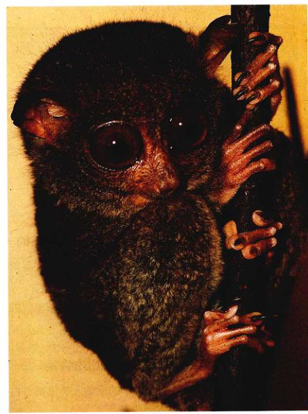
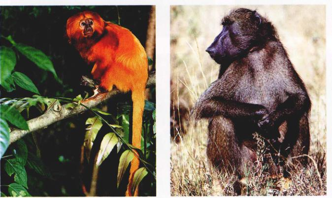
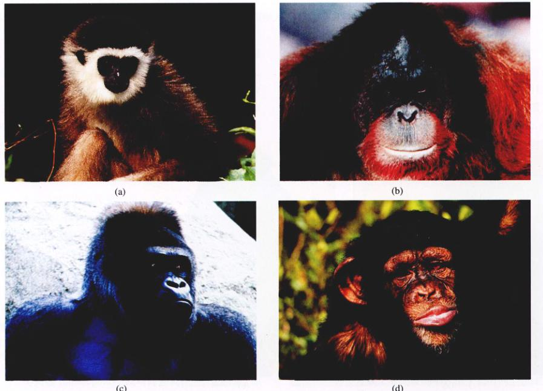
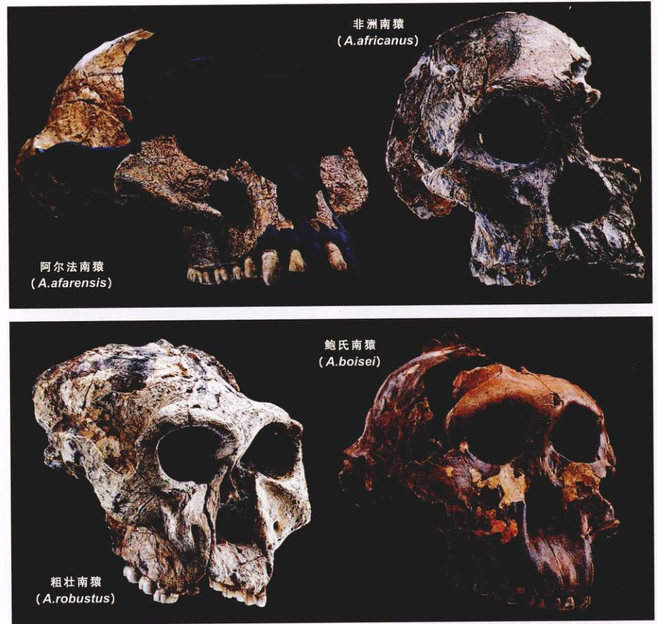
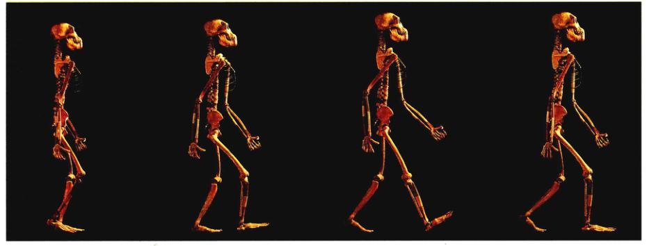
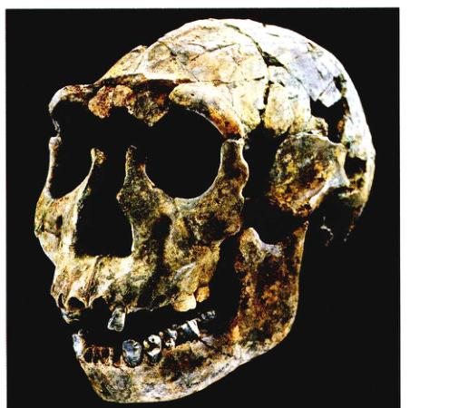
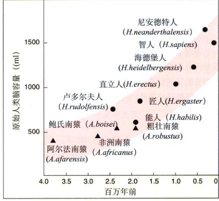
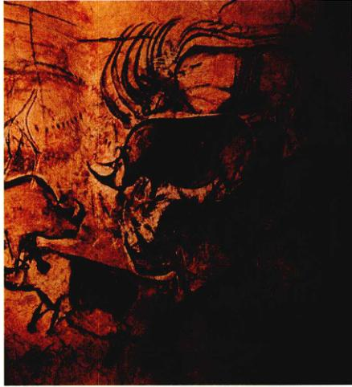

图 23.1 祖先的足迹 这些形成于 370 万年前非洲的足迹化石，看上去像是在海滩上行走的母子留下来的。但是在火山灰中保留下这些足迹的不是人类，而是南猿属 (Australopithecus) 两个个体，人属 (Homo) 就是从这个属进化而来的。
1871年，达尔文发表了他的另一本惊世之作《人类的由来》(The Descent of Man)。在这本书中，他提出人类同大猩猩和黑猩猩都是从同一个非洲猿类祖先进化来的。尽管那个时代很少有化石证据证明达尔文的假说，但以后发现的大量化石证据强烈地支持这一论点（图 23.1）。人类的进化是进化故事中最吸引人的一部分，同时也是我们知道得最详尽的部分。这一章我们将跟随人类进化的旅程，按时间顺序讲述人类进化的故事。尽管这其中充满了争论，但仍不失为一个激动人心的故事。
人类进化的故事始于 6500 万年前，来自一种叫做 Archonta 的小型树栖哺乳动物的爆发性辐射。这些原始的食虫哺乳动物有很大的眼睛，很像现在的夜行如物。这种动物的进化辐射产生了不同种类的哺乳动物，包括蝙蝠、树尖鼠（食虫目）和人类所属的灵长目。
灵长类与其他哺乳动物相比，有两个成功适应树栖和食虫生活环境的特征：
其他的哺乳动物有双目视觉，但是只有灵长类既有双目视觉又有可抓握的手，这使得他们特别适应环境。尽管早期的灵长类是食虫的，但他们齿系开始从适于食虫的尖三角形臼齿变成适于植食的平面的方形的臼齿和像啮齿类一样的切牙。灵长类稍后的进化显示出持续地减少口鼻部分的长度和牙齿数目。
图 23.2 原猴 这种眼镜猴，是亚洲热带地区常见的原猴类，显示了灵长目的特点：适于抓握的手指和双目视觉。
大约在 4000 万年前，最早的灵长类开始分化为两类：原猴类 (prosimian) 和 类人猿类 (anthropoid)。原猴广泛分布在北美、欧洲、亚洲和非洲，长得像松鼠和猫的杂合体。只有少数原猴生存到现在：狐猴、懒猴和眼镜猴（图 23.2）。除了适于抓握的手指和双目视觉，原猴还有很大的眼睛来增加视觉的敏锐度。大多数原猴在夜间活动，以水果、树叶和花为食物。一些狐猴有长长的尾巴用来起平衡作用。
类人猿 (anthropoid)，或叫高等灵长类，包括猴、猿和人（图 23.3）。几乎所有的类人猿都是白天活动的动物，主要以树叶和水果为食。进化改变了眼睛的机能，包括色觉，使得类人猿适于在白天觅食。颅骨增大使大脑所占的比例越来越大，扩大的大脑支配着增强了的视觉功能。人类像少数白天活动的原猴一样聚居在一起，有着复杂的社会结构。此外，类人猿幼崽受哺育的时间更长，使下一代有更多的时间供大脑发育和学习。
早期的类人猿已经灭绝了，它们被认为是在非洲进化产生的。它们的直接后代是灵长类中十分成功的类群——猴。
(1) 新大陆猴：大约在 3000 万年前，一些类人猿迁移到南美，在那里独立地进化。它们的后代，即现在所谓的新大陆猴 (New World monkey) 很好辨认：均为树栖，有平而伸展的鼻子，许多种类用卷曲的长尾巴抓握物体（图 23.4a）。
(2) 旧大陆猴：大约在 2500 万年前，仍然在非洲的类人猿分成了两系，一部分产生了旧大陆猴 (Old World monkeys)；另一部分产生了人科。旧大陆猴包括地面栖息和树上栖息的，都没卷曲的尾巴，鼻向下，鼻孔靠得很近，一些种类皮肤上有坚硬的垫，适于长时间坐在地上（图 23.4b）。
图 23.3 灵长类的进化图谱 最原始的灵长类是原猴，人类是最近才进化出来的。
图 23.4 新大陆猴和旧大陆猴 (a) 新大陆猴，比如卷毛猴是树栖，许多种类有卷曲的尾巴。(b) 旧大陆猴没有卷曲的尾巴，很多是地面栖息的。
早期的灵长类起源于小型树栖食虫动物，进化为原猴和类人猿。早期的类人猿进化产生了新大陆猴和旧大陆猴。
另一个非洲的类人猿分支是类人猿 (Hominoid)，包括猿 (ape) 和原始人类 (hominid)（人类及其直系祖先）。现存的猿类包括：长臂猿 (Hylobates)、猩猩 (Pongo)、大猩猩 (Gorilla)、黑猩猩 (Pan)（图 23.5）。猿的脑比猴大，而且没有尾巴。除了长臂猿较小之外，现存的猿类都比猴大。猿类展现出现了除了人类以外所有哺乳动物中最具适应性的行为。猿类曾在非洲和亚洲广泛分布，但是今天猿类的数量却非常少，分布在非常小的区域里。南美或北美洲都没有出现过猿类。
关于最早的人科动物，现在还有很大争议。在20世纪80年代，人们普遍认为猿类和原始人类的祖先是一种生活在 500 万到 1000 万年前的晚中新世猿。1932年在印度出土的一个 800 万年前的带牙齿的下颚化石是可能的证据，它被通称为腊玛古猿 (Ramapithecus)（以北印度神 Rama 命名）。然而这样的化石从来没有在非洲被发现。1981年发现的完整骨架证明，腊玛古猿事实上是猩猩的近亲。目前注意力又转移到一种早中新世猿 *Proconsul*。它有很多旧大陆猴的特点，但没有尾巴，有猿一样的手脚和骨盆。尽管如此，因为很少有 500 万到 1000 万年间的化石被发现，我们还不能肯定哪一种是最早的人科祖先。
对猿类 DNA 的研究解释了大量有关现存类人猿是如何进化来的问题。亚洲猿最早进化，在类人猿进化路线上，长臂猿在 1500 万年前从其他猿分化出来（图 23.6），而猩猩则在 1000 万年前分化出来，它们都不是人类的近亲。
图 23.5 现存的猿 (a) 长臂猿 *Hylobates muelleri*; (b) 猩猩 *Pongo pygmaeus*; (c) 大猩猩 *Gorilla gorilla*; (d) 黑猩猩 *Pan troglodytes*。
图 23.6 猿类和原始人类骨骼的比较 早期人类（比如南猿）已经能够直立行走，因为它的手臂更短，脊髓与头骨底部相连，骨盆呈碗型，身体的重量压在腿上，而大腿骨内向弯正好在身体的正下方，可以更好地承受体重。
非洲类人猿进化得比较晚，大约在 600 万至 1000 万年前。它们是现存与人类亲缘关系最近的类人猿，一些分类学家甚至主张把非洲类人猿与人类置于同一个科——Hominidae 中。最早的原始人类化石（本章后面将提到）证明，人类的共同祖先更类似黑猩猩，而不是大猩猩。以基因序列的差异为基础，科学家估计，大猩猩是在大约 800 万年前与人类及黑猩猩分化开来的。
当大猩猩这一支分出后，全体人类的共同祖先又与黑猩猩这一支分道扬镳，开始了向人类进化的旅程。由于这一分化发生得很晚，人类和黑猩猩的基因还没有时间产生太多差异。例如，人类和黑猩猩的血红蛋白分子只相差一个氨基酸。总的来说，人类和黑猩猩所具有的基因相似性与同一个种内的生物所展现的相似性处于同一水平。
类人猿与人类的共同祖先被认为是树栖的攀爬动物。人科随后的许多进化反映在行动方式的不同上。人类成为了双足 (bipedal) 站立和直立行走的物种，而类人猿则成为靠关节行走且以手指背侧支持体重的物种（猴子用手掌）。
人类与类人猿在解剖学上具有一些与两足运动有关的差异。因为人类两腿走路，它们的脊柱比类人猿更弯曲，同时，人类的脊柱与头骨底部而不是后部相连。人类的骨盆较类人猿更宽，碗型更明显，骨盆向内弯曲以使身体重心处于双脚上方。二者的臀、膝、脚（人类的大脚趾不向旁迈张开）也具有不同的比例。双足行走的人类以下肢支持绝大部分体重，其下肢占总体重的 32% ~ 38%，且比上肢长；人类的上肢不承担体重，重量仅占总体重的 7% ~ 9%。非洲猿四肢行走，上下肢都承担体重；对于大猩猩，较长的前肢占总体重的 14% ~ 16%，而较短的后肢占约 18%。
500 万到 1000 万年前，全球气候开始变冷，广大的非洲热带雨林被热带稀疏草原及稀疏丛林所代替。受这一变化的影响，一类新的双足行走的类人科动物逐渐进化产生，它们属于原始人类，即人类所属的分支。
原始人类 (hominid) 分为两大类群：智人属的 3 ~ 7 种（取决于种的计算方法）；属于较古老、大脑较小的南方古猿属 (Australopithecus) 的 7 个种。所有有价值的化石证据都表明原始人类是两足直立行走的。两足行走是原始人类进化的标志。我们先讨论南方古猿属，再讨论人属 (Homo)。
原始人类最早是由解剖学家 Raymond Dart 1924 年在南美洲的约翰内斯堡第一次发现的。一天，一个矿工给了他一块不一般的大石块，准确地说，是一块石头一样硬的沙土和泥土的混合物。Dart 检查这块石头时发现是一块不同于他以往所见过的任何类人猿头骨。这块头骨保存得很好，属于一个 5 岁个体，还有乳牙。尽管这块头骨有很多类似类人猿之处，比如突出的面部和较小的脑，但明显还有很多特征，例如其圆形的下颚不同于类人猿的尖下颚。从枕骨大孔（颅骨底部与脊柱相连处的孔）的腹侧位置推断，该生物是直立行走的。Dart 认为它是人类的祖先。
更吸引 Dart 注意力的是，头骨出土的岩层中发现的其他化石表明，其具有几百万年的历史！而当时所报道的最早原始人类化石只有不到 50 万年的历史，所以这块头骨的古老程度是意外而令人激动的。今天的科学家估计 Dart 所发现的头骨应该是 280 万年前留下的。Dart 将它发现的物种命名为非洲南猿 (*Australopithecus africanus*)（拉丁语中 australo 意为“南方”，希腊语 pithecus 则意为“类人猿”）。
今天，化石的年代由新技术——单晶激光融合法来标定。由一束激光融解一块钾长石晶体，放出氩气，并由气相质谱仪检测。因为晶体中的氩以已知的速度聚集，所以氩气的释放量就反映了岩块及其附近化石的年龄。该方法的误差小于 1%。
图 23.7 原始人类 这 4 个头骨都是从一个角度拍摄的。他们是几种重要南猿的最好标本。
1938年，在南非发掘出了另一种更加粗壮的南方古猿化石，称为粗壮南猿 (*A. robustus*)，它有粗壮的牙齿和颌骨。Mary Leakey 发现了另一种更粗壮的南方古猿——鲍氏南猿 (*A. boisei*)（以 Leakey 的资助者，商人 Charles Boise 的姓命名）。和其他南猿一样，鲍氏南猿也非常古老，它们生活在大约 200 万年前，被戏称为“坚果钳”的鲍氏南猿在头顶处有一巨大莫霍克发型一样的骨脊，用以固定下颌肌（图 23.7）。
1974年人类学家 Don Johanson 前往埃塞俄比亚的阿尔法沙漠寻找早期人类化石。功夫不负有心人，他找到了目前已知保存最完整的一具南方古猿化石。这具昵称为“露西”的化石大概 40% 是完整的，约有 300 万年历史。此化石和其他类似化石已定的学名是阿尔法南猿 (*A. afarensis*)（因阿尔法沙漠而得名）。骨盆的形状表明露西是女性，其腿骨表明她直立行走，她的牙齿明显与原始人类相似，头部却像猿类，其脑容量只有 400 mL，和一个大橙子差不多，还不及黑猩猩。自那以后，人们发现的阿尔法南猿化石已超过 300 具。
在过去 10 年内，又有 3 种南方古猿被发现。这 7 个种充分证明了南方古猿是一个多样化的类群，将来肯定会发现更多南猿新种。原始人类的进化似乎是从起初的祖先辐射产生大量新物种开始的。
我们现在已可以从数百种化石中了解南方古猿了。这些化石的结构清楚地表明了南方古猿是直立行走的。这些早期的原始人类高约 1m，重约 18 kg。它们的牙齿有明显的原始人类特征，但脑容量并不比猿类大，一般不超过 500 mL。而人属脑容量一般大于 600 mL，现代智人平均为 1350 mL。南方古猿化石仅在非洲出现，尽管已有的南方古猿化石都来自东非和南非（只有一个例外是来自非洲中北部乍得湖的标本），但它们在非洲的生存区域可能比这广得多，只不过仅东非和南非有暴露在外的那个年代的沉积层。
关于导致原始人类进化的一系列事件的时间顺序，生物学家们争论了大半个世纪。其中一个争论的焦点便是两足行走。两足行走是在我们的祖先离开密林迈向开阔的森林和草地时出现的（图 23.8）。一种观点认为脑容量的增大先于直立行走，另一种则与相反。持第一种观点的人认为原始人类只有智力达到一定程度才能做出直立行走和跨出森林迈向草原的决定。而持第二种观点的人认为直立行走使前肢解放出来，可以创造和使用工具，脑容量于是也随之增大起来。
图 23.8 早期原始人类直立行走复原图 肯特州立大学的 Owen Lovejoy 和他的学生制造的这些塑料骨架生动地再现了早期原始人类——阿尔法南猿 (*Australopithecus afarensis*) 直立行走的情形。
图 23.9 原始人类化石 (a) 已知的最早祖先。1994 年发现的始祖阿德猿 (*Ardipithecus ramidus*) 的牙齿。Ramidus 在拉丁文中意为“根部”，这样命名是因为这具化石被认为是原始人类进化树中位于根部。始祖南猿是已知最原始的人类，生活在大约 440 万年前，与黑猩猩差不多大小，明显是直立行走。(b) 最早的南方古猿。这是被认为最早的南猿证据，420 万年前的阿纳姆南猿颌骨化石。
图 23.10 原始人类进化树 这是一幅被广泛接受的原始人类进化树。图中的竖条表示物种已知的最早和最晚出现时间，虚线则代表时间尚未确定。图中列出了 6 种南猿和 7 种人。
一些在非洲发现的珍贵化石解决了这个争论。这些化石在膝关节、骨盆、腿骨等处都具有直立姿势的特征，说明早在 400 万年前原始人类便开始直立行走。另一方面，脑容量大幅度的增加直到大约 200 万年前才出现。可见，在人类进化历程中，直立行走是先于脑容量增加的。
一个早期原始人类是直立行走的显著证据是在东非的 Laetoli 发现的 69 个原始人脚印。这是两个个体，其中一个大些，并行直立行走了约 27m，脚印表明大脚趾并不像猴子或猿类一样向外张开。万年前的火山灰中（图 23.1）。这些脚印明显是原始人类留下的，因为大脚趾并不像猴子或猿类一样向外张开。
两足行走的出现标志着原始人类的开始。但是原始人类为什么会进化为直立行走仍是一个很大争议的话题。最早的工具出现在 250 万年前，所以制造工具肯定不是一个站不住脚的理由。其他还有很多解释，如直立行走走得更快而且消耗能量更少；直立行走使原始人类可以从树上摘取果实而且不会被较高的草遮挡视线；直立行走可以减少身体暴露在太阳下的面积；直立行走有利于水栖原始人类涉水；直立行走解放了前肢，使雄性可以将食物带回给雌性，从而增进了配偶间的联系。总之，每种解释都有其支持者，但还没有一种被广泛接受。两足行走的起源仍是一个未解之谜。
(1) 已知的最早原始人类：1994年，在埃塞俄比亚发现了一个近乎完整的骨骼化石。这具化石至今仍在被仔细地复原着。但似乎可以肯定它已经直立行走了，例如枕骨大孔和许多其他直立行走的原始人类一样位置靠前。这具化石的年龄大概为 440 万年，是迄今为止发现的最原始的人类化石。它明显地比其他南方古猿更像猿类，所以被划分到一个新的属——始祖阿德猿属 (*Ardipithecus*)（Ardi 在当地语言中为“地”的意思，pithecus 在希腊语中为“猿类”的意思）（图 23.9a）。
(2) 最早的南方古猿：1995年，在肯尼亚 (Kenya) 的 Rift 山谷发现了与始祖阿德猿几乎同时代的人科化石，年龄为 420 万年。这些化石都是些碎片，但却包括了完整的上颌和下颌、一头头骨、臂骨和一段腿骨。这些化石被命名为阿纳姆南猿 (*Australopithecus anamensis*)（anam 在图尔卡纳语中意为“湖”）（图 23.9b）。它们被分到了南方古猿属 (*Australopithecus*) 而不是始祖阿德猿属 (*Ardipithecus*)，因为它们有直立行走的显著特征，且与始祖阿德猿 (*A. ramidus*) 相比并不那么像猿类。尽管已被确定为南猿亚科，它们在很多方面都介于阿尔法南猿和猿类之间。从那以后又有更多阿纳姆南猿化石碎片被发现。大多数学者同意将体格纤细的阿纳姆南猿作为我们进化树中的始祖，也就是说阿纳姆南猿是阿尔法南猿和其他所有南方古猿的祖先。
研究人员采用了两种不同的思想方法对非洲发现的原始人类进行分类。一种着眼于不同化石的共同点，倾向于把所有拥有共同关键特征的化石都放到一起，而把化石之间的差别看成是种内差异；另一种则着眼于化石间的不同点，倾向于把化石之间的差异归结于不同种之间的差异。图 23.10 显示的原始人类进化树就是依据这两种观点绘制的。从图中可以看出，人属在第一种方法中有 3 个物种，而在第二种方法中至少有 7 个种。目前，我们无法判断到底哪种观点是正确的，我们需要更多的化石证据来确定到底什么样的差异算是种内差异，什么样的差异算是种间差异。
最早的人类是大概 200 万年前由南方古猿进化来的。确切的祖先还不完全清楚，一般认为是阿尔法南方古猿。直到最近 30 年大量早期人类的化石才被发掘。过去几年掀起了一股探寻早期人属化石的热潮，于是经常有新的发现展示在世人面前，对人类进化树的认识也一年比一年清晰。今天这里讲的很多东西将来可能被新发现所推翻，但这也恰恰说明科学正在不断地进步。
20 世纪 60 年代早期，在鲍氏南猿的出土地点附近经常发现有石器散布于原始人类的骸骨中间。尽管这些化石都已被严重破坏，但是，艰辛的工作复原出一个脑容量大概为 680 mL 的头骨，大于南方古猿一般为 400 ~ 550 mL 的脑容量。因为它们与工具联系在一起，所以它们被称为能人 (*Homo habilis*)（意为手巧的人）。1986 年发现的一些骨骼表明能人身材矮小，臂长于腿，骨骼与南猿类似。由于它与南方古猿大体相似，许多学者在开始时还怀疑它是否为人类。
1972年，在肯尼亚东北部的鲁道夫湖工作 Richard Leakey 发现了一个与能人几乎同时代的近乎完整头骨。这颗约 190 万年历史的头骨脑容量为 750 mL，且有很多人类头骨的特征，说明它明显已是人类而不再是南猿了。由于它的脑容量有显著的增大，所以一些人类学家把它作为单独的一种——卢多尔夫人 (*H. rudolfensis*)，而另一些人类学家则认为这是一颗成年男性能在人的头骨。
图 23.11 早期人类 这颗死于青春期早期的少年头骨有 160 万年的历史，定名为 *Homo ergaster* （能人的一种，但一些科学家认为应单独划分为一种）。它比早期的原始人类更瘦大，大约 1.5 m，重约 47 kg。
目前发现的有些早期人属化石与上述两个物种并不完全相符（图 23.11）。它们与卢多尔夫人相比有更大的脑容量，而且骨骼在大比例上更像人类而非南猿。有趣的是它们和现代人一样都有一口小齿。一些人类学家把这些标本作为早期人类的第三个种——匠人 (*H. ergaster*) (*ergaster* 在希腊语中意为“工匠”)。
由于已发现的早期人属化石还很少，到底它们应该被并入一个物种——能人，还是分成 3 个物种——卢多尔夫人、能人和匠人，科学家们还在激烈地争论。越来越多的人员趋向于接受后一种观点。如果那样的话，可以认为早期人属经历了一次适应辐射（如第22章提到的那样）；先有卢多尔夫人，接着是能人，然后是匠人；而匠人具有类似现代人的骨骼，它被认为是晚期人属最可能的祖先。
我们关于早期人类的推测缺乏细节，因为只有为数不多的几个标本作为依据。关于取代它们的物种，直立人 (*Homo erectus*)，我们有更多的信息。
在达尔文 1859 年出版《物种起源》之后，许多公众开始讨论“缺失的环节”，即人类和猿类共同祖先的化石。被这个问题所吸引，荷兰医生、解剖学家 Eugene Dubois 决定去猎获猩猩的家乡——爪哇去寻找“缺失的环节”的化石。Dubois 在爪哇西部一个河边的小村庄开始他的发掘工作。1891 年在一座当地人发现“龙骨”的小山上，他挖掘到一个头盖骨和一块大腿骨，他非常兴奋：①大腿骨的结构说明这个个体有个很直的腿，适合于直立行走；②头盖骨显示具有很大的脑容量，大约 1000 mL；③最奇怪的是，与其同时出土的化石显示其具有 50 万年的历史。
Dubois 发现的原始人类化石比他那个时代发现的任何人类化石都要古老。当时很少有科学家愿意承认它是一种古人类。
在科学家被迫承认 Dubois 完全正确之前，又有整整一代人的时间过去了。20 世纪 20 年代，在中国北京附近发现了一个与爪哇人相似的人类头盖骨。后续的发掘找到了 14 个这样的头盖骨，它们中许多被很好地保存着。同时发现的还有很多粗糙的工具以及最重要的发现：火灰烬。这些化石的模型被分散到世界各地的实验室供研究。“二战”爆发之前，这些头盖骨原件被装上卡车运至车站，随即消失在历史的混乱之中，无人知晓那辆卡车及车上所装货物的下落。幸运的是，中国科学家自 1949 年起，发现了更多的北京人头盖骨。
爪哇人和北京人被认为属于同一个人种——直立人 (*Homo erectus*)。直立人比能人高一点，身高约 1.5 m。他们有一个较大的脑，大约 1000 mL（图 23.12），并且能直立行走。他们的头盖骨上有明显的眉骨和一个与现代人相似的圆下巴。更有趣的事，头盖骨的内部结构说明，直立人可以说话。
图 23.12 随着人类的进化，脑容量不断增大 直立人的脑容量比早期人属大，而早期人的脑容量要比共同占据东非草原的南猿大。脑容量最大的（从外观上来看）是尼安德特人。在最近的几十万年，人的脑容量和身体的大小都下降了大约 10%。
直立人从哪里来？无疑，他们来自非洲。1976 年在东非，一个完整的直立人头骨被发现。这个头骨有 150 万年的历史，比爪哇人和北京人还早 100 万年。直立人比能人更成功，他们在非洲迅速地扩张和繁衍，并且还在 100 万年内迁徙到亚洲和欧洲。直立人有社会组织性，他们生活在 20~50 人的部落中，通常是在山洞里。他们可以成功地捕获大型动物，用石器、骨器工具屠宰这些猎物，并且在火上烤熟——在中国的古人类遗址中有马、熊、大象、鹿和犀牛的遗骸。
直立人生存了 100 万年，比其他种类的人都长。这些能适应环境的直立人消失于 50 万年前，与此时现代人类出现了。有趣的，在亚洲直立人生存的更长一些，直到 25 万年前他们才消失。
图 23.13 我们自己的属 从同一个角度拍摄的 4 个头盖骨照片显示出人类进化过程中的变化。智人 (*Homo sapiens*) 的头盖骨和今天的人类基本一样。
60 万年前现代人在非洲第一次出现时，人类进化的旅程进入了最后阶段。关心人类分类的学者认为曾经有过 3 种现代人：海德堡人 (*Homo heidelbergensis*)、尼安德特人 (*H. neanderthalensis*)、智人 (*H. sapiens*)（见图 23.10）。其他的学者把这 3 种人归为一种：智人。最古老的现代人——海德堡人，是基于埃塞俄比亚发现的 60 万年前化石而了解的，尽管和直立人共同生存于非洲，海德堡人有更高级的解剖结构，比如，明显的骨脊贯穿颅骨的中线，有一个很厚的眉脊和一个很大的脑，同时，它们的前额和鼻骨与智人很相似。
在直立人逐渐消失时，13 万年前一个新的入种从非洲来到了欧洲。尼安德特人似乎是在 50 万年前从现代人类进化的路线上分出来的一个旁支。和现代人相比，尼安德特人矮而粗壮，身体结实。他们的头盖骨很重，有突出的脸和很重很突出的眉脊（图 23.13），同时有很大的颅骨。
图 23.14 多次走出非洲 一个仍有争议的理论认为，人属多次从非洲扩散到亚洲和欧洲。第一次，直立人（白箭头）扩散远至爪哇和中国。后来，直立人被尼安德特人取代，尼安德特人又被智人取代（红箭头）。
我们所属的种——智人 (*Homo sapiens*)，已知最早的化石是在埃塞俄比亚发现的，大约有 13 万年历史。其他一些从以色列出土的化石大约有 10 万 ~ 12 万年的历史。在非洲和中东以外，还发现大致年龄超过 40 万年的智人化石。这暗指智人可能是在非洲进化出来的，随后迁移到欧洲和亚洲，即“近世非洲起源说 (Recently-Out-of-Africa model)”。相反的观点，“多起源说 (Multiregional hypothesis)”认为，不同人种是由世界不同地区的直立人进化来的。
最近，科学家关于人类线粒体 DNA (mtDNA) 的研究更加激化了这个争论。因为 DNA 随时间积累突变，最古老的人群应该显示出最大的基因多样性。研究人员测定了 53 个不同民族个体的全部 mtDNA，发现现代人在 17 万年前有一个共同的祖先，由此推测智人大约也是这个时间在非洲进化产生的。研究数据同时表明，在人类进化树上 5.2 万年前处有一个分支，这个分支将非洲人与非非洲人区分开来。这一结论与人类起源于非洲，从那里沿着直立人几十万年前的足迹传播到世界各地这一假说相符合（图 23.14）。
另一种推测人类进化树的方法是检测人的 Y 染色体，因为它不经历重组。男性的 Y 染色体不加改变的从一代人传递到下一代人。进化过程中产生的任何新变化因为会被不加改变地遗传下来而可以很容易地在进化树中追溯。参与这个研究的人员检测了 1000 个以上的欧洲男人。虽然他们检测出不同的类型，但 80% 的欧洲男人属于同一个基因类型，说明现代欧洲人有一个共同的祖先。这些数据表明，这些类型在 4 万 ~ 5 万年前产生，也就是说是我们这个种直到最近才进入欧洲。
从这些证据来看，“多起源说”是错误的。我们的进化树只有一个主干。
智人 (*Homo sapiens*) 是人属中唯一存活下来的物种，事实上也是唯一存活下来的人。在以色列 Nazareth 附近山洞里发现的 20 具保存完好且有头骨的骨架是最好的智人化石之一，现代测定年代的技术表明这些骨架的年龄在 9 万 ~ 10 万年之间。这些骨架的头盖骨和现代人很相似，有高、短的颅，前额顶只有很窄的眉脊，同时有大约 1550 mL 的脑容量，这么大的脑容量和现代人相似。
尼安德特人（许多古生物学者将他们作为单独一种）(*H. neanderthalensis*) 是以 1856 年其化石首次发现地——德国的尼安德特峡谷命名的。刚刚走出非洲时数量还很少，渐渐地他们在欧洲和亚洲开始兴盛，至 7 万年前已遍布亚欧大陆。尼安德特人住在茅屋或山洞里，制造各种工具，包括刮刀、矛头和手斧。他们照顾受伤者和生病者，通常会埋葬死者，有时还会把食物、武器甚至鲜花放在死者的身体旁一起埋葬。他们重视死亡，说明他们相信在死后还有另一种生活。这是现代人类有抽象思维能力的第一个证据。
尼安德特人的化石在 3.4 万年前突然消失，取而代之的是一种叫做克罗马农人 (Cro-Magnons)（以其首次发现地法国的一个峡谷命名）的智人化石。我们只能推测为什么会出现这么突然的取代，但这个取代是在很短时间内在全欧洲同时出现的。有许多证据表明克罗马农人来自非洲——在那里发现了有 10 万年历史且具有克罗马农人特征的化石。4 万年前克罗马农人好像完全取代了中东的尼安德特人，然后他们迁向欧洲，和尼安德特人一起生活了数千年。最近的分析显示，尼安德特人的 DNA 和克罗马农人的 DNA 有很大的差别，这个结论说明这两个人种之间不能交配。尼安德特人是我们的表亲，而不是我们的祖先。代替尼安德特人的克罗马农人有复杂的社会结构及完备的语言能力。在整个欧洲我们都可以看到克罗马农人绘制的精美壁画（图 23.15）。
最终在至少 1.3 万年前，当冰川开始消退而且大陆桥依然连接着西伯利亚和阿拉斯加时，现代人从西伯利亚扩展到北美。1 万年前，地球上总共大约有 500 万人口（而现在超过 60 亿）。
我们人类是动物，是生物进化的产物。我们的进化以脑容量的逐渐增大为主要标志，将我们在许多方面和其他动物分开。首先，人类能有效地制造和使用工具——这是人类在动物王国中占统治地位的最重要原因。其次，尽管我们不是唯一可以抽象思维的动物，但我们精练并扩展了这个能力，使之成为我们人类的特点。最后，我们用符号语言并且可以用语言表达从经验中总结出的概念。我们的语言能力让我们以一种其他动物没有的东西：从一代传到下一代。因此我们有其他动物没有的东西：文明的进化。贯穿文明的发展，我们用不同方式改变和影响环境，而不是进化性改变自身以适应环境。我们从以前不可能的方法去掌握命运，这是一个令人兴奋的潜能，同时也是一个令人惊恐的责任。
图 23.15 克罗马农人的艺术 这幅非凡的壁画描绘了犀牛在一群动物中的景象，发现于 1995 年法国的 Vallon-Pontd'Arc。
人类和其他动物一样，由于广泛分布在世界各地而有不同的特征。同地区的人有明显的特征，如欧洲人有金色的头发、蓝色的眼睛和白皙的皮肤，而非洲人有黑色的头发、黑色的皮肤和棕色的眼睛。人类的这些不同特点可能是为了适应当地的环境。血型可能和对某个地区特有疾病的免疫有关。黑色的皮肤可以保护人不受过度紫外线辐射的伤害，因此生活在热带的人皮肤比生活在温带的人皮肤颜色要深。
图 23.16 人类种群中的基因差异和皮肤颜色差异分布模式不同 (a) 智人基因的不同。人类基于许多酶和血型基因位点的相似性分类，图下的符号表示相似程度。(b) 智人基于皮肤颜色的相似性。这是根据人类皮肤色素沉量进行的分类。
现在所有的人种之间都可以通婚并能产生有生育能力的后代，人种之间很少通婚主要是由于心理和文化上的原因。人类可以再次划分为几类是一个争论点。一些当代的人类学家将人类分为多达 30 个入种，其他人只分为 3 个：高加索人、尼格罗人 (黑人) 和东方人。美洲印第安人、丛林人、土著人是特殊的亚单位，通常被归为不同的人种。
将人类或其他生物按照这种方式进行分类的问题是：用于分类的特征之间相关性不好，所以分类通常带有武断性。人们主要通过视觉认知，结果我们根据视觉线索——主要是皮肤颜色——来区分人种。当其他的分类方法，比如血型分析引人人种分类时，我们得到和视觉分类大相径庭的结果。事实上，如果我们按人类基因组的相似性来分类，结果会和皮肤颜色或其他视觉特征分类的结果很不—样（图 23.16）。
对于人类来说，我们不可能很简单地界定人种使其反映出生物学的差异。理由很简单：在整个历史过程中不同人种不断有通婚和基因交流。不断的基因流动阻止了人类在亚种级别上的分化。人群中不同的特征，例如皮肤颜色，是典型的基因交流对抗自然选择的例子。正如我们在第20章看到的，当选择作用足哆强时，同一热带地区的黑人即便在具有基因流动的条件下也会分化。尽管如此，在这种情况下，基因流动仍然保持着其他地区人群的基因均一性。
正由于这个原因，所谓的人种间没有多少不同。事实上，一项研究表明不同人种间的差异仅占人类基因差异的 8%。换句话说，将人类划分为人种并没有体现出人类之间的大部分差异。因此，大多教生物学家反对人类的种族划分法，因为这种划分法没有体现出生物学上人类的差异。在生物学上应该把每个人视为不同的特点集合体来看待，而不应该按他们属于某个“人种”来划分。